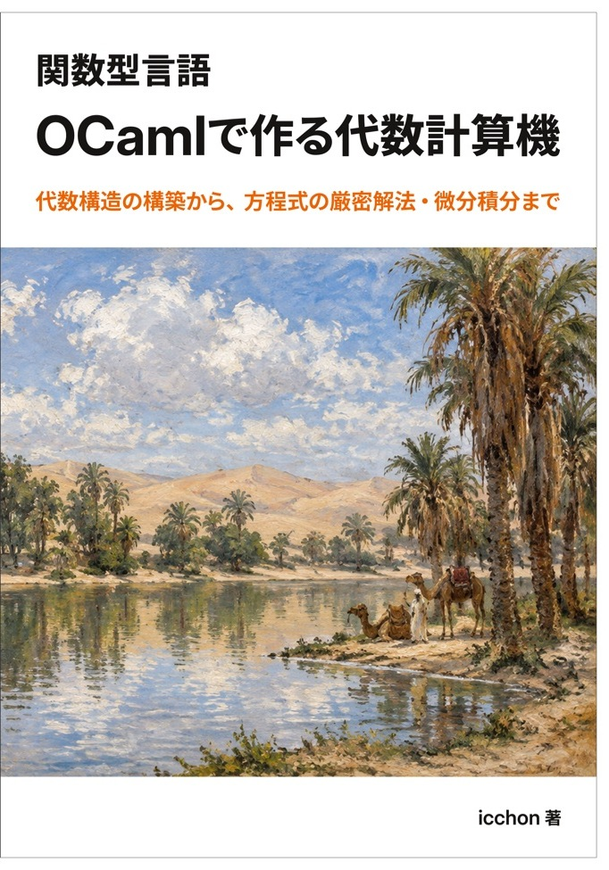

なぜOCamlで代数計算機をつくるのか
数値的に解くか代数的に解くか／「代数的に解く」プログラムにも深さがある／型が代数になる、ということ／前提知識／本書の構成

代数構造の構築から、方程式の厳密解法・微分積分まで
本書は、整数・有理数・複素数・多項式・ベクトルといった一見バラバラに見える代数構造を、OCamlのモジュールとファンクタを使って同じ枠組みの上に実装していく技術書です。実装した部品を使って、方程式の求解や微分・積分といった具体的な計算に応用するところまでを扱います。
実装では、「群」「環」「体」といった代数的な性質と、OCamlのモジュール・ファンクタによる実装を一対一に対応させます。引き算を「足し算と逆元から自動的に導出する」ように、群・モノイド・環・体といった代数的な性質を、「ある性質を満たす代数を受け取ると、別の演算を自動生成する」ファンクタとして組み立てていきます。
こうして積み重ねた部品を使うと、整数・有理数・複素数・ベクトル・多項式・拡大体が同じ部品の組み合わせでできていることが見えてきます。さらにこの部品を使って、2次方程式の解を近似値ではなく四則演算と累乗根だけの厳密な式として求めたり、微分・積分を扱ったりするところまでを本書で実装します。
type・module・functorなどの構文は、専用の章でまとめて説明しますコードの実行結果は、コンパイル・実行の手順とあわせて本文中にそのまま示します。そのため、手元でOCamlを実行しなくても最後まで読み進められます。実際にコードを試したい方向けに、環境構築の章でセットアップ方法も説明していますが、必須の準備ではありません。
本書は大きく2つの章「基礎的な代数をつくる」「代数を応用する」で構成されます。
数値的に解くか代数的に解くか／「代数的に解く」プログラムにも深さがある／型が代数になる、ということ／前提知識／本書の構成
OCamlコンパイラのセットアップ（本文を読み進めるだけなら必須ではありません）
値と関数の束縛、モジュールとファンクタなど、以降の章で繰り返し使う構文のまとめ
整数・有理数・複素数・ベクトル・多項式・拡大体を、同じファンクタを使い回しながら1つずつ実装します。
ここまでつくった部品を組み合わせて、2次方程式を解き、微分・積分まで扱います。
各イベントの購入ページ・詳細は決まり次第このページで更新します。